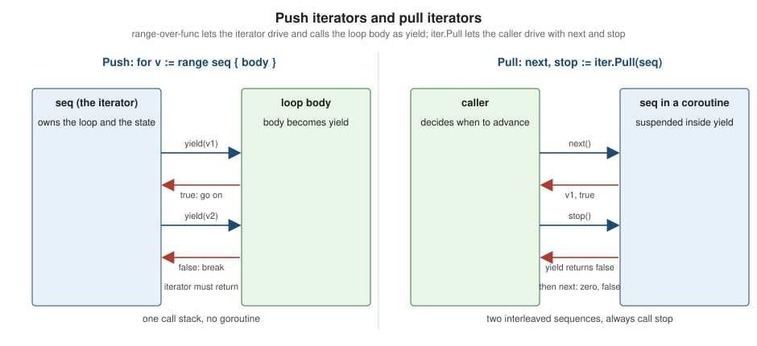

Iterators and Range-over-Func
|
This content was generated with the assistance of AI and should be verified against the official documentation before being relied on in production. |
This page is written against Go 1.27 (go1.27.2), checked on 2026-10-18; every go.mod shown has the line go 1.27.
Until Go 1.23 the for ... range statement worked only on a fixed list of built-in things: arrays, slices, strings,
maps, channels and (since Go 1.22) integers. A library that offered its own collection, a tree, a set or a database
result, had to invent a cursor type (for it.Next() { it.Value() }), pass a callback (tree.Walk(func(k K) {...}))
or copy everything into a slice first, and none of these could use break, continue or return the way a for loop
can. Go 1.23 closed that gap with range over function types: a function with a special shape can be the operand of
range, and the body of the loop becomes a callback that the function calls. The result is called an iterator.
The language change is tiny, the iter package defines two named types, and the slices, maps, strings, bytes and
reflect packages now return iterators from many of their functions.
This page explains the three function shapes, how the compiler turns a loop body into a yield function, the contract
an iterator must obey, what happens when it does not, pull iterators (iter.Pull) for the cases where the caller must
drive the iteration, writing and composing iterators with generics, every iterator-returning function of the standard
library, conventions, pitfalls, and the version in which each piece appeared. It builds on
Control Flow (the other range forms, labels, break),
Functions, Closures and Defer (function values and
defer) and Generics (type parameters, used by every adapter here). The
data structures that iterators walk are covered in Arrays and Slices and
Maps. Cross-language comparisons are in the
Rust Reference (pull-based Iterator with adapters),
Python (generators),
Java streams and
C# iterators (yield return). Go’s version is a
form of internal iteration: the loop body is passed to the sequence as a function, not the other way round.
Every example was compiled, vetted with go vet and run with Go 1.27.2; the output shown is the real output (the
compiler messages are likewise copied from real runs). The go.mod of the example module is:
module example.com/shelf
go 1.27Why iterators exist
A collection can be walked in two broad ways. External iteration gives the caller a cursor and lets it decide when to advance; internal iteration hands the collection a function and lets the collection decide how to call it. Both have costs in Go:
-
A cursor object (
Next() bool,Value() T) works withfor, but the author of the collection must store the walk state in a struct, which is painful for recursive structures such as trees, and the cursor leaks if it holds a resource that is never closed. -
A callback (
Walk(func(T))) is easy to write, even recursively, but the caller losesbreak,continue,returnanddeferinside the callback: those statements would apply to the callback, not to the surrounding function. -
Channels and goroutines turn any producer into a sequence, but each element crosses a synchronisation point, the producer goroutine leaks if the consumer stops early, and the pattern is heavy for something as simple as walking a slice.
Range over function types keeps the simple shape of the callback, so the iterator author writes an ordinary loop (even a
recursive one), and gives the caller a real for statement. The compiler rewrites the loop body into a function and
rewrites break, continue, goto, labelled jumps, return and defer inside it so that they keep their meaning. The
design rationale is in the Range Over Function Types blog post and the
range-over-func wiki page.
The three function shapes
The specification (For statements with range clause) accepts a function value
as the range expression when it has one of three types. The function is called the iterator; its single parameter,
conventionally named yield, is the yield function:
| Iterator type | Iteration variables | Named type in package iter |
|---|---|---|
|
none: |
none (no named type) |
|
one: |
|
|
two: |
|
The iterator must not have any results, and yield must return exactly one bool. The number of iteration variables
may be smaller than the number of yield parameters (you may write for k := range seq2 or for range seq2) but never
larger. The element types V, K and V can be anything, including other functions or iter.Seq values.
package main
import "fmt"
// Count calls yield with 1, 2, ... n. It is a push iterator.
func Count(n int) func(yield func(int) bool) {
return func(yield func(int) bool) {
for i := 1; i <= n; i++ {
if !yield(i) {
return
}
}
}
}
// Pairs yields index/title pairs.
func Pairs(titles []string) func(yield func(int, string) bool) {
return func(yield func(int, string) bool) {
for i, t := range titles {
if !yield(i, t) {
return
}
}
}
}
// Ticks yields nothing but signals n times.
func Ticks(n int) func(yield func() bool) {
return func(yield func() bool) {
for range n {
if !yield() {
return
}
}
}
}
func main() {
for v := range Count(3) {
fmt.Println("value", v)
}
for i, t := range Pairs([]string{"Dune", "Emma"}) {
fmt.Println("pair", i, t)
}
for range Ticks(2) {
fmt.Println("tick")
}
// Count is an ordinary function: it can also be called directly.
Count(2)(func(v int) bool {
fmt.Println("direct", v)
return true
})
}value 1
value 2
value 3
pair 0 Dune
pair 1 Emma
tick
tick
direct 1
direct 2Count is a normal function. Ranging over it does not call it in any special way: the compiler calls Count(3) once to
obtain the iterator, then calls the iterator with a synthesised yield. The last lines of main show that the iterator
can also be called by hand with any function of the right shape, which is exactly what happens when the loop is rewritten.
Two details of the rules:
-
As with every
forloop, the iteration variables declared with:=are new for each iteration (the Go 1.22 rule, see Control Flow); a closure created in the body captures that iteration’s value, not a variable shared by all iterations. -
Range over function types, like range over integers, depends on the
goline of the module: a module that saysgo 1.22or older cannot use it (see the compile errors below).
How a loop body becomes yield
Conceptually, the statement
for v := range seq {
body
}means "call seq with a function that runs body for one value and reports whether to go on". The specification
describes it as follows (paraphrased): the iteration proceeds by calling the function with a new, synthesised yield;
every call of yield assigns its arguments to the iteration variables and runs the body once; if the body finishes
normally (or with continue), yield returns true and may be called again; if the body terminates the loop (with
break, return, a goto to a label outside, a labelled continue of an outer loop or a panic) yield returns
false and must not be called again; when the function returns, the loop is over.
The diagram makes the key point of the design visible: the loop body runs inside the iterator’s call stack, between
two statements of the iterator. This is why the contract in the next sections matters: when the body wants to leave the
loop, it cannot unwind the iterator’s stack itself; it returns false and relies on the iterator to return promptly, after
which the compiler-generated code performs the real break or return in the enclosing function.
iter.Seq and iter.Seq2
The iter package (pkg.go.dev/iter, Go 1.23) contains the two named generic types and the pull
functions. Its whole API is:
| Declaration | Meaning |
|---|---|
|
a sequence of single values |
|
a sequence of pairs, usually key-value or index-value |
|
convert a push iterator into a pull iterator |
|
the same for pairs |
The named types are defined function types, but a function literal or any function with the underlying signature is
assignable to them, so an iterator can be written without ever naming iter.Seq. The advantage of the names is
readability and type inference: a signature func Filter[V any](seq iter.Seq[V], ...) iter.Seq[V] reads better than
func Filter[V any](seq func(yield func(V) bool), ...) func(yield func(V) bool), and the compiler can infer V from
either form.
Producers conventionally return an iter.Seq; consumers accept one. The shelf catalogue below shows the typical
shapes: a method named All for every element, a variant with its own name for a filtered or reversed walk, and an
iterator built on top of another iterator.
package main
import (
"fmt"
"iter"
"slices"
)
type ISBN string
type Book struct {
ISBN ISBN
Title string
Author string
Year int
}
// Catalog is a small in-memory collection of books.
type Catalog struct {
books []Book
}
func (c *Catalog) Add(b Book) { c.books = append(c.books, b) }
// All returns an iterator over every book in insertion order.
func (c *Catalog) All() iter.Seq[Book] {
return func(yield func(Book) bool) {
for _, b := range c.books {
if !yield(b) {
return
}
}
}
}
// Backward returns an iterator over every book, newest insertion first.
func (c *Catalog) Backward() iter.Seq2[int, Book] {
return func(yield func(int, Book) bool) {
for i := len(c.books) - 1; i >= 0; i-- {
if !yield(i, c.books[i]) {
return
}
}
}
}
// ByAuthor returns an iterator over the books written by author.
func (c *Catalog) ByAuthor(author string) iter.Seq[Book] {
return func(yield func(Book) bool) {
for b := range c.All() {
if b.Author == author && !yield(b) {
return
}
}
}
}
func main() {
var c Catalog
c.Add(Book{"9780441172719", "Dune", "Frank Herbert", 1965})
c.Add(Book{"9780441172726", "Dune Messiah", "Frank Herbert", 1969})
c.Add(Book{"9780441478125", "The Left Hand of Darkness", "Ursula K. Le Guin", 1969})
for b := range c.All() {
fmt.Println(b.Title)
}
for i, b := range c.Backward() {
fmt.Println(i, b.Title)
}
for b := range c.ByAuthor("Frank Herbert") {
fmt.Println("herbert:", b.Year, b.Title)
}
titles := slices.Collect(c.ByAuthor("Frank Herbert"))
fmt.Println(len(titles), "books collected")
}Dune
Dune Messiah
The Left Hand of Darkness
2 The Left Hand of Darkness
1 Dune Messiah
0 Dune
herbert: 1965 Dune
herbert: 1969 Dune Messiah
2 books collectedSource: iter: Seq and The Go Blog: Range Over Function Types
Observations:
-
The iterator is a closure over the receiver
c; callingc.All()allocates nothing by itself, the work happens when the loop calls the returned function. -
ByAuthorranges overc.All()inside its own body: iterators compose by nesting loops, and the inneryieldresult is propagated outwards (!yield(b)thenreturn). Forgetting that propagation is the single most common iterator bug. -
The iterator is evaluated lazily. Nothing happens when
ByAuthor("Frank Herbert")is called; the filter runs while the consumer (rangeorslices.Collect) pulls elements. -
A
Seq2is not a map:Backwardyields an index and a book, in the order the author chose. -
Because the loop variable of
rangeis per-iteration, thebyielded to the body is a copy of the element, exactly like an ordinaryrangeover a slice of structs. Modifying it does not change the catalogue.
The yield contract and early termination
An iterator must follow these rules (the iter package documentation states that "Yield panics if called after it
returns false"; the others follow from the specification):
-
If
yieldreturnsfalse, the iterator must stop calling it and return as soon as it reasonably can. -
The iterator must not call
yieldafter the iterator function has returned. A storedyieldis dead once the loop is over. -
Calls of
yieldmust happen one at a time, from a single goroutine: the loop body is ordinary sequential code and is not written to be re-entered concurrently. -
The iterator may run cleanup code, typically with
defer, and the compiler guarantees that this code runs even if the loop body leaves the loop bybreak,returnor a panic.
The next program logs every step so that the order of events is visible, including what break and return cause the iterator to do.
package main
import (
"fmt"
"iter"
)
func Count(n int) iter.Seq[int] {
return func(yield func(int) bool) {
defer fmt.Println(" iterator: cleanup")
for i := 1; i <= n; i++ {
fmt.Println(" iterator: yielding", i)
if !yield(i) {
fmt.Println(" iterator: told to stop")
return
}
}
fmt.Println(" iterator: exhausted")
}
}
func first(limit int) int {
for v := range Count(5) {
if v == limit {
return v * 10 // return from the enclosing function
}
}
return -1
}
func main() {
fmt.Println("full loop")
for v := range Count(2) {
fmt.Println("body", v)
}
fmt.Println("break")
for v := range Count(5) {
if v == 2 {
break
}
fmt.Println("body", v)
}
fmt.Println("return from the enclosing function")
fmt.Println("result", first(2))
}full loop
iterator: yielding 1
body 1
iterator: yielding 2
body 2
iterator: exhausted
iterator: cleanup
break
iterator: yielding 1
body 1
iterator: yielding 2
iterator: told to stop
iterator: cleanup
return from the enclosing function
iterator: yielding 1
iterator: yielding 2
iterator: told to stop
iterator: cleanup
result 20Source: The Go Programming Language Specification: For statements with range clause and iter: Iterators
Read the output as the sequence diagram above: on break (and equally on return) the iterator sees yield return false,
prints "told to stop", runs its deferred call and returns; only then does the enclosing function leave the loop. The
return v * 10 in first is a return of the enclosing function, with the right value, even though the statement
executes deep inside a callback.
Everything a loop body may do
Because the compiler rewrites the body, all the usual control-flow statements work, including the awkward ones:
-
continuemakesyieldreturntrue; -
breakmakesyieldreturnfalse, and the loop ends after the iterator returns; -
return(with or without values) records the results, makesyieldreturnfalse, and the enclosing function returns when the iterator does; -
labelled
breakandcontinuethat target an outer loop, andgototo a label outside the body, are supported across any number of nested range-over-func loops; -
deferin the body registers the call on the enclosing function, not on the callback, so it runs when that function returns; -
a
panicin the body propagates through the iterator’s stack (running its deferred calls) up to whoever recovers it; -
recoverandruntime.Goexitkeep their meaning.
package main
import (
"fmt"
"iter"
)
func Count(n int) iter.Seq[int] {
return func(yield func(int) bool) {
for i := range n {
if !yield(i) {
return
}
}
}
}
func Letters() iter.Seq[string] {
return func(yield func(string) bool) {
for _, s := range []string{"a", "b", "c"} {
if !yield(s) {
return
}
}
}
}
func find() string {
outer:
for i := range Count(3) {
for l := range Letters() {
switch {
case i == 0 && l == "b":
continue outer // next i
case i == 1 && l == "c":
break outer // leave both loops
case i == 2:
return "unreachable"
}
fmt.Println("visit", i, l)
}
}
return "done"
}
func deferred() {
for i := range Count(2) {
defer fmt.Println("deferred in body", i) // runs when deferred returns
}
fmt.Println("loop finished")
}
func main() {
fmt.Println(find())
deferred()
}visit 0 a
visit 1 a
visit 1 b
done
loop finished
deferred in body 1
deferred in body 0continue outer jumps to the next i (so b and c are skipped for i == 0), break outer leaves both loops when
i == 1 reaches "c", and the deferred function prints its two deferred lines, in last-in-first-out order, only after
the loop has finished and the function is returning. The body of an ordinary range would behave identically.
What goes wrong when an iterator misbehaves
Because yield is an ordinary function, the compiler cannot prevent an iterator from ignoring its result. The runtime
detects the most common violations and panics with a runtime.Error. An iterator that ignores false and keeps calling
yield is caught on the next call:
package main
import (
"fmt"
"iter"
)
// Broken ignores the false result of yield.
func Broken() iter.Seq[int] {
return func(yield func(int) bool) {
for i := 1; i <= 3; i++ {
yield(i) // BUG: result ignored
}
}
}
func main() {
defer func() {
fmt.Println("recovered:", recover())
}()
for v := range Broken() {
fmt.Println("body", v)
break
}
}body 1
recovered: runtime error: range function continued iteration after function for loop body returned falseSource: iter: Iterators
Without the check, the body would have run a second time after break. The same detection applies to an iterator that
stores yield and calls it after the loop has ended, even though the loop ended normally:
package main
import (
"fmt"
"iter"
)
var saved func(int) bool
// Leaky stores yield so that it can be called after the loop is over.
func Leaky() iter.Seq[int] {
return func(yield func(int) bool) {
saved = yield
yield(1)
}
}
func main() {
defer func() {
fmt.Println("recovered:", recover())
}()
for v := range Leaky() {
fmt.Println("body", v)
}
saved(2)
}body 1
recovered: runtime error: range function continued iteration after whole loop exitSource: iter: Iterators
The checks are cheap flags set by the code the compiler generates; they cannot catch an iterator that merely takes too long
to return after false, nor concurrent calls from several goroutines, which are a data race. go vet has no analyzer for
a forgotten yield check, so tests that break out of the loop (see Testing iterators) are the
defence. A third run-time failure is a call through a nil iterator, which is an ordinary nil function call:
package main
import (
"fmt"
"iter"
)
func main() {
defer func() { fmt.Println("recovered:", recover()) }()
var seq iter.Seq[int] // nil
for v := range seq {
fmt.Println(v)
}
}recovered: runtime error: invalid memory address or nil pointer dereferencePanics and cleanup
A panic raised by the loop body unwinds through the iterator’s frames, so the iterator’s defer statements run
before the panic reaches the caller. A panic raised by the iterator itself unwinds through the loop, and the rest of the
body of the enclosing function is skipped as for any panic. In both directions deferred cleanup is guaranteed:
package main
import (
"fmt"
"iter"
)
func Boom() iter.Seq[int] {
return func(yield func(int) bool) {
defer fmt.Println("iterator: deferred cleanup runs")
yield(1)
panic("iterator failed")
}
}
func BodyPanics() iter.Seq[int] {
return func(yield func(int) bool) {
defer fmt.Println("iterator: deferred cleanup runs")
for i := 1; ; i++ {
if !yield(i) {
return
}
}
}
}
func try(name string, f func()) {
defer func() { fmt.Println(name, "recovered:", recover()) }()
f()
}
func main() {
try("iterator panic", func() {
for v := range Boom() {
fmt.Println("body", v)
}
})
try("body panic", func() {
for v := range BodyPanics() {
if v == 2 {
panic("body failed")
}
}
})
}body 1
iterator: deferred cleanup runs
iterator panic recovered: iterator failed
iterator: deferred cleanup runs
body panic recovered: body failedThis is what makes iterators the right tool for resources: an iterator that opens a file, a database cursor
(*sql.Rows) or a lock can release it with defer in the iterator function itself, and every way the loop can end is covered.
The caller writes a plain for loop with no Close call. Chapter-length cleanup logic that earlier versions of Go
scattered over defer rows.Close() at each call site can now live in one iterator.
Iterators that return errors
An iterator has no place to return an error: its type has no results. Three conventions exist:
-
a
iter.Seq2[T, error]that yields(value, nil)for each element and(zero, err)for a failure, after which the iterator normally stops (the form used in the examples of this page); -
an
iter.Seq[T]together with anErr() errormethod on the receiver that the caller reads after the loop (thebufio.Scannerstyle); -
a pointer to an error passed into the iterator constructor.
The first form makes forgetting to check impossible to miss, because the second iteration variable is visible in the loop header; it is the most common choice in new code. The error can also be non-final (the example below continues after a recoverable error) as long as the documentation says so.
package main
import (
"bufio"
"errors"
"fmt"
"iter"
"strings"
)
var ErrEmptyTitle = errors.New("empty title")
// Titles reads one title per line. Each element is a value and an error;
// after yielding a non-nil error the iterator stops.
func Titles(r *bufio.Reader) iter.Seq2[string, error] {
return func(yield func(string, error) bool) {
for {
line, err := r.ReadString('\n')
line = strings.TrimSpace(line)
if line != "" {
if !yield(line, nil) {
return
}
} else if err == nil {
if !yield("", ErrEmptyTitle) {
return
}
}
if err != nil {
return // io.EOF: normal end of the sequence
}
}
}
}
func main() {
in := bufio.NewReader(strings.NewReader("Dune\nEmma\n\nUlysses\n"))
for title, err := range Titles(in) {
if err != nil {
fmt.Println("error:", err)
continue
}
fmt.Println("title:", title)
}
}title: Dune
title: Emma
error: empty title
title: UlyssesSource: iter: Seq2 and The Go Blog: Errors are values
See Error Handling for wrapping and sentinel errors.
Infinite, single-use and reusable iterators
An iterator is allowed to be infinite: the loop ends only through break, return or goto, and the iterator returns when yield says false.
This is the same shape as a generator in other languages, but there is no hidden state: the state lives in the
closure, one fresh copy per call of the iterator.
package main
import (
"fmt"
"iter"
)
// Fib is an infinite iterator: it only ends when the loop body breaks.
func Fib() iter.Seq[int] {
return func(yield func(int) bool) {
a, b := 0, 1
for {
if !yield(a) {
return
}
a, b = b, a+b
}
}
}
// Numbered yields 1, 2, 3, ... without end.
func Numbered() iter.Seq[int] {
return func(yield func(int) bool) {
for i := 1; ; i++ {
if !yield(i) {
return
}
}
}
}
func main() {
for n := range Fib() {
if n > 50 {
break
}
fmt.Print(n, " ")
}
fmt.Println()
for n := range Numbered() {
if n%2 == 0 {
continue
}
if n > 9 {
break
}
fmt.Print(n, " ")
}
fmt.Println()
}0 1 1 2 3 5 8 13 21 34
1 3 5 7 9Whether an iterator can be ranged over more than once depends on where its state lives. Fib creates a and b
inside the returned function, so each loop starts from the beginning: it is reusable. An iterator that consumes an
external resource, a bufio.Scanner, a network connection or a channel, is single-use: the second loop sees
what is left, which is nothing. The documentation of every iterator-returning function should say which one it is
(strings.Lines, for example, is documented as returning a single-use iterator, whereas slices.Values can be ranged over any number of times).
package main
import (
"bufio"
"fmt"
"iter"
"strings"
)
// Lines returns a single-use iterator: it consumes r, so a second range
// loop over the same value sees nothing.
func Lines(r *bufio.Scanner) iter.Seq[string] {
return func(yield func(string) bool) {
for r.Scan() {
if !yield(r.Text()) {
return
}
}
}
}
func main() {
seq := Lines(bufio.NewScanner(strings.NewReader("Dune\nEmma\n")))
for l := range seq {
fmt.Println("first pass:", l)
}
for l := range seq {
fmt.Println("second pass:", l)
}
fmt.Println("second pass is empty")
}first pass: Dune
first pass: Emma
second pass is emptySource: iter: Iterators and bufio: Scanner
Recursive iterators: walking a tree
Recursion is where iterators beat both cursors and callbacks. A cursor over a binary tree needs an explicit stack; a callback
walk loses break. With an iterator, the recursive helper returns the bool produced by yield and every level propagates it,
so a break at depth ten unwinds all ten calls immediately:
package main
import (
"cmp"
"fmt"
"iter"
"slices"
)
// Tree is a binary search tree.
type Tree[K cmp.Ordered] struct {
left, right *Tree[K]
key K
}
// Insert adds key and returns the (possibly new) root.
func (t *Tree[K]) Insert(key K) *Tree[K] {
if t == nil {
return &Tree[K]{key: key}
}
switch c := cmp.Compare(key, t.key); {
case c < 0:
t.left = t.left.Insert(key)
case c > 0:
t.right = t.right.Insert(key)
}
return t
}
// All yields the keys in ascending order. The recursive helper returns false
// as soon as yield does, so the whole recursion unwinds at once.
func (t *Tree[K]) All() iter.Seq[K] {
return func(yield func(K) bool) {
t.push(yield)
}
}
func (t *Tree[K]) push(yield func(K) bool) bool {
if t == nil {
return true
}
return t.left.push(yield) && yield(t.key) && t.right.push(yield)
}
func main() {
var root *Tree[string]
for _, s := range []string{"Hamlet", "Dune", "Ulysses", "Emma", "Dracula"} {
root = root.Insert(s)
}
fmt.Println(slices.Collect(root.All()))
for k := range root.All() {
fmt.Println("first key:", k)
break
}
}[Dracula Dune Emma Hamlet Ulysses]
first key: DraculaThe expression t.left.push(yield) && yield(t.key) && t.right.push(yield) is the idiom: short-circuit evaluation stops the walk
the moment any part returns false. Note that Insert on a nil receiver works because methods may be called on nil pointers
(see Methods and Receivers).
Composing iterators: adapters with generics
Because an iterator is a value, functions can take one and return another. The usual adapters, Filter, Map, Take,
Enumerate, Zip, Chain, are each a dozen lines of generic code. The standard library does not ship
them: the iter package contains only the two types and Pull/Pull2, and the helpers are the ones listed in the tables
below. The adapters below are the ones to copy into an internal package, and in many cases a plain for loop with an
if is clearer than a chain of adapters.
package main
import (
"fmt"
"iter"
"slices"
"strings"
)
// Filter yields the elements of seq for which keep returns true.
func Filter[V any](seq iter.Seq[V], keep func(V) bool) iter.Seq[V] {
return func(yield func(V) bool) {
for v := range seq {
if keep(v) && !yield(v) {
return
}
}
}
}
// Map yields f(v) for every v in seq.
func Map[V, U any](seq iter.Seq[V], f func(V) U) iter.Seq[U] {
return func(yield func(U) bool) {
for v := range seq {
if !yield(f(v)) {
return
}
}
}
}
// Take yields at most n elements of seq.
func Take[V any](seq iter.Seq[V], n int) iter.Seq[V] {
return func(yield func(V) bool) {
if n <= 0 {
return
}
i := 0
for v := range seq {
if !yield(v) {
return
}
i++
if i >= n {
return
}
}
}
}
// Enumerate turns a Seq into a Seq2 of index and value.
func Enumerate[V any](seq iter.Seq[V]) iter.Seq2[int, V] {
return func(yield func(int, V) bool) {
i := 0
for v := range seq {
if !yield(i, v) {
return
}
i++
}
}
}
// Keys and Values split a Seq2 again.
func Keys[K, V any](seq iter.Seq2[K, V]) iter.Seq[K] {
return func(yield func(K) bool) {
for k := range seq {
if !yield(k) {
return
}
}
}
}
func Numbers() iter.Seq[int] {
return func(yield func(int) bool) {
for i := 1; ; i++ {
fmt.Println(" produce", i)
if !yield(i) {
return
}
}
}
}
func main() {
titles := []string{"dune", "emma", "ulysses", "dracula", "hamlet"}
long := Filter(slices.Values(titles), func(s string) bool { return len(s) > 4 })
upper := Map(long, strings.ToUpper)
for i, t := range Enumerate(upper) {
fmt.Println(i, t)
}
fmt.Println(slices.Collect(Keys(Enumerate(slices.Values(titles)))))
// Laziness: nothing runs until a loop pulls, and Take stops the producer.
squares := Map(Filter(Numbers(), func(n int) bool { return n%2 == 1 }), func(n int) int { return n * n })
fmt.Println("first three odd squares:", slices.Collect(Take(squares, 3)))
}0 ULYSSES
1 DRACULA
2 HAMLET
[0 1 2 3 4]
produce 1
produce 2
produce 3
produce 4
produce 5
first three odd squares: [1 9 25]Source: iter: Iterators and slices: Values
Two things deserve attention. First, laziness: the pipeline Map(Filter(Numbers(), odd), square) is only a nested set of
closures until slices.Collect drives it, and Take returns as soon as it has three elements, so Numbers is
asked to produce exactly the five values it takes to find three odd numbers and then stops. Without the n check in
Take before the loop (and the early return after the last element) the producer would run one value further than necessary. Second, every adapter has
the same skeleton: for v := range input { ... if !yield(out) { return } }. Keep that skeleton intact.
1, 2, 3, 4, 5 ..."] --> flt["Filter odd"] flt --> mp["Map square"] mp --> tk["Take 3"] tk --> col["slices.Collect"] col -. "yield returns false after the third value" .-> tk tk -. "false propagates back" .-> mp mp -. "false" .-> flt flt -. "false" .-> src
Solid arrows show the direction of the values, dashed arrows the direction of the false result: values are pushed
downstream, the stop signal travels back upstream through every yield.
Generic types with iterator methods
A generic container conventionally exposes its elements with an All method, mirroring what slices and maps do for the
built-in types. The Insert and Collect pair below follows the standard library’s own naming (maps.Insert adds a sequence to a
map, maps.Collect builds a map):
package main
import (
"fmt"
"iter"
"slices"
)
// Set is a generic set with an iterator method named All.
type Set[V comparable] struct {
m map[V]struct{}
}
func NewSet[V comparable](vs ...V) *Set[V] {
s := &Set[V]{m: map[V]struct{}{}}
for _, v := range vs {
s.m[v] = struct{}{}
}
return s
}
// All returns an iterator over the elements of s in no particular order.
func (s *Set[V]) All() iter.Seq[V] {
return func(yield func(V) bool) {
for v := range s.m {
if !yield(v) {
return
}
}
}
}
// Insert adds every element of seq to s.
func (s *Set[V]) Insert(seq iter.Seq[V]) {
for v := range seq {
s.m[v] = struct{}{}
}
}
// Collect builds a Set from a sequence.
func Collect[V comparable](seq iter.Seq[V]) *Set[V] {
s := NewSet[V]()
s.Insert(seq)
return s
}
func main() {
a := NewSet(3, 1, 2)
b := Collect(slices.Values([]int{2, 3, 4, 3}))
a.Insert(b.All())
fmt.Println(slices.Sorted(a.All()))
fmt.Println(len(a.m))
}[1 2 3 4]
4Source: iter: Naming Conventions and maps: Insert
Generic methods (Go 1.27)
Before Go 1.27 a method could not declare type parameters of its own, so a method-style chain seq.Map(f).Filter(g) with a
result type different from the receiver’s was impossible: Map had to be a package-level function. Go 1.27 allows a
method declaration to introduce its own type parameters (see the
generic methods blog post and the Go 1.27 release notes),
which lets a collection offer type-changing iterator methods:
package main
import (
"fmt"
"iter"
)
type Library struct{ titles []string }
// Generic method (Go 1.27): a method with its own type parameter.
func (l *Library) Map[U any](f func(string) U) iter.Seq[U] {
return func(yield func(U) bool) {
for _, t := range l.titles {
if !yield(f(t)) {
return
}
}
}
}
func main() {
l := &Library{titles: []string{"Dune", "Emma"}}
for n := range l.Map(func(s string) int { return len(s) }) {
fmt.Println(n)
}
for s := range l.Map(func(s string) string { return "<" + s + ">" }) {
fmt.Println(s)
}
}4
4
<Dune>
<Emma>Source: The Go Blog: Generic methods and Go 1.27 Release Notes
The restrictions are important. Interface methods cannot declare type parameters, and a generic method cannot satisfy an
interface method: a generic method is only reachable through the concrete type. A method-chain API on iter.Seq itself is not possible, because
iter.Seq lives in the standard library and methods can only be declared in the defining package; Library above is a
type of our own. The package-level adapters of the previous section remain the portable choice and work with
any module that can use range-over-func (go 1.23 or newer), whereas generic methods need go 1.27.
More in Generics.
Pull iterators: iter.Pull and iter.Pull2
A push iterator calls the caller; a pull iterator is called by the caller. Sometimes the second shape is the one you
need, because the consumer must advance two sequences independently (merging, zipping, comparing), or must read one element, do something else, and
read the next later. A for loop cannot do that: the iterator owns the loop. iter.Pull converts a push iterator into two functions:
-
next() (V, bool)returns the next value andtrue, or the zero value andfalsewhen the sequence is over; -
stop()ends the iteration early and lets the iterator clean up.
package main
import (
"fmt"
"iter"
"slices"
)
func main() {
seq := slices.Values([]string{"Dune", "Emma", "Ulysses"})
next, stop := iter.Pull(seq)
defer stop() // always call stop, even if the sequence may be exhausted
for {
v, ok := next()
if !ok {
break
}
fmt.Println("pulled", v)
}
// After exhaustion (or after stop) next keeps returning the zero value.
v, ok := next()
fmt.Printf("after the end: %q %t\n", v, ok)
// Pull2 for a Seq2.
next2, stop2 := iter.Pull2(slices.All([]string{"a", "b"}))
i, s, ok := next2()
fmt.Println(i, s, ok)
stop2()
i, s, ok = next2()
fmt.Printf("after stop: %d %q %t\n", i, s, ok)
}pulled Dune
pulled Emma
pulled Ulysses
after the end: "" false
0 a true
after stop: 0 "" falseSource: iter: Pull and iter: Pull2
The documented rules (iter.Pull):
-
it is valid to call
nextafter the end or afterstop: it keeps returning the zero value andfalse; -
stopmust be called when the caller stops beforenexthas returnedfalse; it is valid to call it several times and after the sequence has ended, so the idiom isdefer stop()right after the call; -
nextandstopmust not be called from several goroutines at once; -
if the iterator panics during
nextorstop, that function panics with the same value.
The figure compares the two control flows.

Why stop matters: the iterator is suspended inside yield, in the middle of its own loop. Unless stop makes that
yield return false, the iterator never reaches its defer statements and whatever it holds (a file, a lock, a database cursor) stays open. A pull
iterator that is abandoned without stop also keeps its coroutine alive until the program ends.
package main
import (
"fmt"
"iter"
)
func Count(n int) iter.Seq[int] {
return func(yield func(int) bool) {
defer fmt.Println(" iterator: deferred cleanup")
for i := 1; i <= n; i++ {
if !yield(i) {
fmt.Println(" iterator: yield returned false")
return
}
}
}
}
func Fail() iter.Seq[int] {
return func(yield func(int) bool) {
yield(1)
panic("source failed")
}
}
func main() {
next, stop := iter.Pull(Count(5))
v, ok := next()
fmt.Println(v, ok)
fmt.Println("calling stop")
stop() // makes the pending yield return false so the iterator can clean up
fmt.Println("stop returned")
stop() // calling stop again is safe
v, ok = next()
fmt.Println(v, ok)
// A panic inside the iterator is propagated to the caller of next.
func() {
defer func() { fmt.Println("recovered:", recover()) }()
next, stop := iter.Pull(Fail())
defer stop()
fmt.Println(next())
fmt.Println(next())
}()
}1 true
calling stop
iterator: yield returned false
iterator: deferred cleanup
stop returned
0 false
1 true
recovered: source failedSource: iter: Pull
The first part shows stop() making the pending yield return false, the iterator printing its message and the deferred cleanup
running before stop returns; a second stop and a later next are harmless. The second part shows the
panic rule: a panic in the iterator surfaces in the caller’s call to next, where it can be recovered.
Pull iterators are implemented with runtime coroutines: the iterator runs on its own stack and control is handed back
and forth directly, without the channel traffic of a hand-written producer goroutine. A next call is still more
expensive than an iteration of a plain for loop. Reach for iter.Pull only when a for loop genuinely cannot express the control flow.
Merging and comparing sequences
The two classic uses, merging two sorted sequences and comparing two sequences element by element, need two cursors at once:
package main
import (
"fmt"
"iter"
"slices"
)
// Merge combines two sorted sequences into one sorted sequence. It needs to
// advance both inputs independently, so it uses pull iterators.
func Merge[V any](a, b iter.Seq[V], cmp func(V, V) int) iter.Seq[V] {
return func(yield func(V) bool) {
nextA, stopA := iter.Pull(a)
defer stopA()
nextB, stopB := iter.Pull(b)
defer stopB()
va, okA := nextA()
vb, okB := nextB()
for okA && okB {
if cmp(va, vb) <= 0 {
if !yield(va) {
return
}
va, okA = nextA()
} else {
if !yield(vb) {
return
}
vb, okB = nextB()
}
}
for ; okA; va, okA = nextA() {
if !yield(va) {
return
}
}
for ; okB; vb, okB = nextB() {
if !yield(vb) {
return
}
}
}
}
// Equal reports whether two sequences have the same elements.
func Equal[V comparable](a, b iter.Seq[V]) bool {
nextA, stopA := iter.Pull(a)
defer stopA()
nextB, stopB := iter.Pull(b)
defer stopB()
for {
va, okA := nextA()
vb, okB := nextB()
if okA != okB {
return false
}
if !okA {
return true
}
if va != vb {
return false
}
}
}
func main() {
a := slices.Values([]int{1, 4, 9})
b := slices.Values([]int{2, 3, 10, 11})
cmp := func(x, y int) int { return x - y }
fmt.Println(slices.Collect(Merge(a, b, cmp)))
fmt.Println(Equal(a, slices.Values([]int{1, 4, 9})), Equal(a, b))
}[1 2 3 4 9 10 11]
true falseSource: iter: Pull and slices
Merge itself returns a push iterator (iter.Seq), so it composes with slices.Collect, range and the adapters above;
the pull iterators are an implementation detail kept inside it, closed by defer stopA() and defer stopB() whether the
consumer stops early or reads everything.
Iterators and goroutines
An iterator may use goroutines and channels internally, but yield is always called from the goroutine that runs the iterator, so the
loop body never runs concurrently with itself. The loop body is not run on the producer goroutine unless the iterator
itself is called from there. The example drains the channel when the body breaks, so the producer goroutine is not leaked
(sync.WaitGroup.Go is Go 1.25).
package main
import (
"fmt"
"iter"
"slices"
"sync"
)
func main() {
// An iterator may use goroutines and channels internally. yield is still
// called from the goroutine that runs the iterator, never from the
// producer, so the loop body never runs concurrently with itself.
seq := func(yield func(int) bool) {
var wg sync.WaitGroup
results := make(chan int)
wg.Go(func() {
defer close(results)
for i := 1; i <= 3; i++ {
results <- i * i
}
})
for v := range results {
if !yield(v) {
// Drain so the producer goroutine is not leaked.
for range results {
}
break
}
}
wg.Wait()
}
fmt.Println(slices.Collect(iter.Seq[int](seq)))
for v := range seq {
fmt.Println("got", v)
break
}
}[1 4 9]
got 1Source: iter: Iterators and sync: WaitGroup.Go
An iterator that receives from a channel needs a way out other than the channel closing. Passing a context.Context is the
usual answer; the example below also shows the subtlety that select chooses randomly among ready cases, so the
context is checked explicitly before each receive to make the behaviour deterministic:
package main
import (
"context"
"fmt"
"iter"
)
// Recv yields values received from ch until ch is closed, ctx is cancelled
// or the loop body breaks.
func Recv[V any](ctx context.Context, ch <-chan V) iter.Seq[V] {
return func(yield func(V) bool) {
for {
if ctx.Err() != nil { // check first: select picks randomly among ready cases
return
}
select {
case <-ctx.Done():
return
case v, ok := <-ch:
if !ok || !yield(v) {
return
}
}
}
}
}
func main() {
ctx, cancel := context.WithCancel(context.Background())
defer cancel()
ch := make(chan string, 3)
ch <- "Dune"
ch <- "Emma"
ch <- "Ulysses"
for title := range Recv(ctx, ch) {
fmt.Println("received", title)
if title == "Emma" {
cancel() // the next loop iteration observes the cancellation
}
}
fmt.Println("ctx error:", ctx.Err())
}received Dune
received Emma
ctx error: context canceledSee Channels and Select, Context and Concurrency Patterns for the underlying concepts.
Iterator helpers in the standard library
Since Go 1.23 many packages return iterators or accept them. The tables list every function present in Go 1.27 (checked
with go doc on go1.27.2).
slices (Go 1.23)
| Function | Returns / does | Notes |
|---|---|---|
|
|
same pairs as |
|
|
the usual way to turn a slice into a |
|
|
no more |
|
|
returns |
|
appends a sequence to |
reuses capacity of |
|
collects then sorts |
element type must be |
|
collects then sorts with a comparison function |
not stable |
|
the stable variant |
keeps the sequence order of equal elements |
|
|
sub-slices are clipped (capacity equals length); panics if |
maps (Go 1.23)
| Function | Returns / does |
|---|---|
|
|
|
|
|
|
|
adds the pairs of a |
|
builds a new map from a |
strings and bytes (Go 1.24)
| Function | Returns / does |
|---|---|
|
each line, including its terminating newline; no final empty line; single-use |
|
substrings around |
|
substrings, each keeping its trailing |
|
fields separated by runs of white space, like |
|
fields separated by runs of runes satisfying |
|
the same, yielding |
package main
import (
"fmt"
"maps"
"slices"
"strings"
)
type Book struct {
Title string
Year int
}
func main() {
books := []Book{{"Dune", 1965}, {"Emma", 1815}, {"Ulysses", 1922}, {"Hamlet", 1603}, {"Dracula", 1897}}
// All and Values: index/value and value-only iterators.
for i, b := range slices.All(books[:2]) {
fmt.Println("All:", i, b.Title)
}
fmt.Println("Values:", slices.Collect(slices.Values([]int{3, 1, 2})))
// Backward: reverse iteration without writing an index loop.
for i, b := range slices.Backward(books[:3]) {
fmt.Println("Backward:", i, b.Title)
}
// Collect and Sorted turn a sequence into a slice.
years := slices.Collect(func(yield func(int) bool) {
for _, b := range books {
if !yield(b.Year) {
return
}
}
})
fmt.Println("Collect:", years)
fmt.Println("Sorted:", slices.Sorted(slices.Values(years)))
byTitle := slices.SortedFunc(slices.Values(books), func(a, b Book) int {
return strings.Compare(a.Title, b.Title)
})
fmt.Println("SortedFunc:", byTitle[0].Title, byTitle[len(byTitle)-1].Title)
// Chunk splits a slice into sub-slices of at most n elements.
for c := range slices.Chunk([]int{1, 2, 3, 4, 5}, 2) {
fmt.Println("Chunk:", c, len(c), cap(c))
}
// AppendSeq appends a sequence to an existing slice.
fmt.Println("AppendSeq:", slices.AppendSeq([]int{0}, slices.Values([]int{7, 8})))
// maps: iteration order of a map is random, so sort before printing.
stock := map[string]int{"Dune": 3, "Emma": 0, "Ulysses": 1}
fmt.Println("Keys:", slices.Sorted(maps.Keys(stock)))
fmt.Println("Values:", slices.Sorted(maps.Values(stock)))
clone := maps.Collect(maps.All(stock))
maps.Insert(clone, maps.All(map[string]int{"Hamlet": 2}))
fmt.Println("Collect+Insert:", len(clone), maps.Equal(clone, stock))
}All: 0 Dune
All: 1 Emma
Values: [3 1 2]
Backward: 2 Ulysses
Backward: 1 Emma
Backward: 0 Dune
Collect: [1965 1815 1922 1603 1897]
Sorted: [1603 1815 1897 1922 1965]
SortedFunc: Dracula Ulysses
Chunk: [1 2] 2 2
Chunk: [3 4] 2 2
Chunk: [5] 1 1
AppendSeq: [0 7 8]
Keys: [Dune Emma Ulysses]
Values: [0 1 3]
Collect+Insert: 4 falseThe order of maps.Keys and maps.Values is the random order of a map range (see
Maps), so deterministic output needs slices.Sorted(maps.Keys(m)), the Go 1.23
replacement for the old "collect the keys, sort them, loop" routine. slices.Collect(maps.Keys(m)) is the one-liner that
replaced the pre-1.21 key-collecting loop and the golang.org/x/exp/maps helpers that returned slices.
package main
import (
"bytes"
"fmt"
"strings"
)
func main() {
text := "Dune;Emma\nUlysses;Hamlet\n"
for line := range strings.Lines(text) {
fmt.Printf("Lines: %q\n", line)
}
for part := range strings.SplitSeq("Dune;Emma;Ulysses", ";") {
fmt.Println("SplitSeq:", part)
}
for part := range strings.SplitAfterSeq("a,b,c", ",") {
fmt.Printf("SplitAfterSeq: %q\n", part)
}
for f := range strings.FieldsSeq(" the left hand\tof darkness ") {
fmt.Println("FieldsSeq:", f)
}
for f := range strings.FieldsFuncSeq("a1b22c", func(r rune) bool { return r >= '0' && r <= '9' }) {
fmt.Println("FieldsFuncSeq:", f)
}
// The bytes package mirrors them and yields sub-slices of the input.
for f := range bytes.FieldsSeq([]byte("x y")) {
fmt.Printf("bytes.FieldsSeq: %s\n", f)
}
}Lines: "Dune;Emma\n"
Lines: "Ulysses;Hamlet\n"
SplitSeq: Dune
SplitSeq: Emma
SplitSeq: Ulysses
SplitAfterSeq: "a,"
SplitAfterSeq: "b,"
SplitAfterSeq: "c"
FieldsSeq: the
FieldsSeq: left
FieldsSeq: hand
FieldsSeq: of
FieldsSeq: darkness
FieldsFuncSeq: a
FieldsFuncSeq: b
FieldsFuncSeq: c
bytes.FieldsSeq: x
bytes.FieldsSeq: yThe Seq variants avoid building the intermediate slice that strings.Split allocates, and Lines avoids both the slice and a bufio.Scanner
when the text is already in memory. Use strings.Split when you need the slice anyway.
reflect (Go 1.23 and Go 1.26)
| Function | Returns / does |
|---|---|
|
iterate over a value the way |
|
report whether the type may be iterated with |
|
iterators over the struct fields, methods, input and output parameters of a type |
|
iterators over a value’s fields or methods together with their values |
package main
import (
"fmt"
"reflect"
)
type Book struct {
Title string `json:"title"`
Pages int `json:"pages"`
}
func (b Book) Summary() string { return fmt.Sprintf("%s (%d pages)", b.Title, b.Pages) }
func (b *Book) Grow(n int) { b.Pages += n }
func lookup(a int, b string) (bool, error) { return false, nil }
func main() {
t := reflect.TypeFor[Book]()
for f := range t.Fields() {
fmt.Println("field:", f.Name, f.Type, f.Tag.Get("json"))
}
for m := range reflect.TypeFor[*Book]().Methods() {
fmt.Println("method:", m.Name)
}
ft := reflect.TypeOf(lookup)
for in := range ft.Ins() {
fmt.Println("in:", in)
}
for out := range ft.Outs() {
fmt.Println("out:", out)
}
// Value.Fields yields the field description and the field value together.
b := Book{"Dune", 412}
for f, v := range reflect.ValueOf(b).Fields() {
fmt.Println("value:", f.Name, v)
}
// Value.Seq ranges over anything a range statement accepts.
for v := range reflect.ValueOf([]string{"a", "b"}).Seq() {
fmt.Println("Seq:", v)
}
for k, v := range reflect.ValueOf(map[string]int{"x": 1}).Seq2() {
fmt.Println("Seq2:", k, v)
}
for v := range reflect.ValueOf(3).Seq() {
fmt.Print(v, " ")
}
fmt.Println()
fmt.Println(reflect.TypeFor[[]int]().CanSeq(), reflect.TypeFor[string]().CanSeq2())
}field: Title string title
field: Pages int pages
method: Grow
method: Summary
in: int
in: string
out: bool
out: error
value: Title Dune
value: Pages 412
Seq: 0
Seq: 1
Seq2: x 1
0 1 2
true trueSource: reflect and Go 1.26 Release Notes
See Reflection for the rest of the package.
Other packages
-
go/ast.Preorder(root)(Go 1.23) yields every node of a syntax tree in depth-first order, replacing mostast.Inspectclosures.go/types(Go 1.24) added to its list-like types, those with aLenand anAtmethod, methods that return iterators (for exampleParams().Variables()), replacing index loops overLenandAt. -
text/template(Go 1.24) supportsrangeover integers and over function iterators, so a template can range over aniter.Seqvalue. -
sync.WaitGroup.Go(Go 1.25) and the other concurrency helpers are not iterators but are the natural companion of the producer-goroutine patterns above. -
Go 1.28, expected in February 2027, has not been released at the time of writing and its release notes are still a stub. The
regexpandflagpackages have no iterator functions in Go 1.27 (checked withgo doc); iterator methods for them are expected in Go 1.28 and should be confirmed in the final release notes (Go 1.28 release notes) before being relied on.
package main
import (
"fmt"
"go/ast"
"go/parser"
"go/token"
)
func main() {
src := `package catalog
type Book struct{ Title string }
func (b Book) Summary() string { return b.Title }
func Lend(b Book) error { return nil }
`
fset := token.NewFileSet()
f, err := parser.ParseFile(fset, "catalog.go", src, 0)
if err != nil {
fmt.Println(err)
return
}
// ast.Preorder (Go 1.23) replaces ast.Inspect with a closure.
for n := range ast.Preorder(f) {
if fn, ok := n.(*ast.FuncDecl); ok {
fmt.Println("func", fn.Name.Name, "at line", fset.Position(fn.Pos()).Line)
}
}
}func Summary at line 5
func Lend at line 6Source: go/ast: Preorder
Naming conventions
The iter package documentation (Naming Conventions) records the conventions
that the standard library follows and that user code should copy:
| Situation | Convention |
|---|---|
a method that walks all the elements of a collection |
name it |
a function that returns an iterator over part of a collection |
name it after the sequence it walks: |
a function producing an iterator from a slice-like argument |
|
a function that builds a collection from an iterator |
|
an iterator over a collection with several natural sequences |
one method per sequence ( |
an iterator that cannot be restarted |
say so in its documentation ( |
an iterator that may fail |
|
Other guidance, from the standard library’s own use and the blog post: return iter.Seq rather than a concrete function
type; take an iter.Seq parameter instead of a slice when the function only needs to read the elements once; keep one
Seq per kind of walk instead of adding flags; avoid an iterator that needs a Close method (use defer inside the
iterator or a pull iterator with stop); and do not return an iterator from a function that already allocates the whole
slice, because returning the slice is simpler and often faster.
Testing iterators
Testing an iterator means checking its values and its behaviour when the loop leaves early: break, return and the
requirement that producers stop. The test below checks laziness (the producer ran exactly as many times as needed)
and measures allocations of a plain range over slices.Values with testing.AllocsPerRun. The go.mod is the one
above; the package and test files are seq.go and seq_test.go.
// Package seq holds small iterator adapters.
package seq
import "iter"
// Take yields at most n elements of s.
func Take[V any](s iter.Seq[V], n int) iter.Seq[V] {
return func(yield func(V) bool) {
if n <= 0 {
return
}
i := 0
for v := range s {
if !yield(v) {
return
}
i++
if i == n {
return
}
}
}
}
// Counter yields 0, 1, 2, ... and records how many values it produced.
func Counter(produced *int) iter.Seq[int] {
return func(yield func(int) bool) {
for i := 0; ; i++ {
*produced++
if !yield(i) {
return
}
}
}
}Source: iter: Seq
package seq
import (
"slices"
"testing"
)
func TestTake(t *testing.T) {
var produced int
got := slices.Collect(Take(Counter(&produced), 3))
if want := []int{0, 1, 2}; !slices.Equal(got, want) {
t.Fatalf("got %v, want %v", got, want)
}
// Take must stop the producer as soon as it has enough elements.
if produced != 3 {
t.Errorf("producer ran %d times, want 3", produced)
}
}
func TestTakeZero(t *testing.T) {
var produced int
for range Take(Counter(&produced), 0) {
t.Fatal("body must not run")
}
if produced != 0 {
t.Errorf("producer ran %d times, want 0", produced)
}
}
func TestSliceIterationDoesNotAllocate(t *testing.T) {
data := []int{1, 2, 3, 4}
allocs := testing.AllocsPerRun(100, func() {
sum := 0
for v := range slices.Values(data) {
sum += v
}
_ = sum
})
t.Logf("allocations per run: %v", allocs)
}$ go test -v -count=1 .
=== RUN TestTake
--- PASS: TestTake (0.00s)
=== RUN TestTakeZero
--- PASS: TestTakeZero (0.00s)
=== RUN TestSliceIterationDoesNotAllocate
seq_test.go:39: allocations per run: 0
--- PASS: TestSliceIterationDoesNotAllocate (0.00s)
PASS
ok example.com/shelf/t01 0.061sSource: testing: AllocsPerRun and iter: Iterators
The allocation count is zero here, which is what inlining the small iterator and the loop body makes possible. That is an
optimisation, not a language guarantee: closures that escape or iterators that are too large to inline may allocate, so
measure with a benchmark (b.Loop, see Benchmarks, Fuzzing and synctest)
before replacing a hot index loop. As a rule of thumb, ranging over a function costs a few indirect calls per element,
which is irrelevant next to I/O and usually small next to the work done per element, but it is not free.
See Testing for the testing package.
Compile errors and vet reports
Range over function has a small set of compile errors, all copied here from real runs of go build with Go 1.27.2.
Too many iteration variables. The function has a one-argument yield, so only one variable is allowed:
package main
import "fmt"
func Count(n int) func(yield func(int) bool) {
return func(yield func(int) bool) {
for i := range n {
if !yield(i) {
return
}
}
}
}
func main() {
for i, v := range Count(3) {
fmt.Println(i, v)
}
}# example.com/shelf/k01
k01/main.go:16:9: range over Count(3) (value of type func(yield func(int) bool)) permits only one iteration variableWrong shape. yield must return bool, have at most two parameters, and the iterator must have no results:
package main
import "fmt"
func NoBool(yield func(int)) {
yield(1)
}
func Extra(yield func(int, int, int) bool) {
yield(1, 2, 3)
}
func Result(yield func(int) bool) bool {
return yield(1)
}
func main() {
for v := range NoBool {
fmt.Println(v)
}
for v := range Extra {
fmt.Println(v)
}
for v := range Result {
fmt.Println(v)
}
}# example.com/shelf/k02
k02/main.go:18:17: cannot range over NoBool (value of type func(yield func(int))): func must be func(yield func(...) bool): yield func does not return bool
k02/main.go:21:17: cannot range over Extra (value of type func(yield func(int, int, int) bool)): func must be func(yield func(...) bool): yield func has too many parameters
k02/main.go:24:17: cannot range over Result (value of type func(yield func(int) bool) bool): func must be func(yield func(...) bool): unexpected resultsNo iteration variables allowed. func(yield func() bool) has nothing to assign:
package main
import "fmt"
func Ticks(yield func() bool) {
yield()
}
func main() {
for i := range Ticks {
fmt.Println(i)
}
var f func(func(int) bool)
for range f {
}
}# example.com/shelf/k03
k03/main.go:10:6: range over Ticks (value of type func(yield func() bool)) permits no iteration variablesLanguage version too old. The same program as the first example, in a module whose go.mod says go 1.22:
module example.com/old
go 1.22# example.com/old/e01
e01/main.go:39:17: cannot range over Count(3) (value of type func(yield func(int) bool)): requires go1.23 or later (-lang was set to go1.22; check go.mod)
e01/main.go:42:20: cannot range over Pairs([]string{…}) (value of type func(yield func(int, string) bool)): requires go1.23 or later (-lang was set to go1.22; check go.mod)
e01/main.go:45:12: cannot range over Ticks(2) (value of type func(yield func() bool)): requires go1.23 or later (-lang was set to go1.22; check go.mod)Source: The Go Programming Language Specification: For statements with range clause and Go Toolchains
go vet has no analyzer that checks the yield contract in Go 1.27. The existing analyzers still apply inside iterators
and loop bodies (copylocks, lostcancel), and go fix carries modernizers that move older code to iterators
(see Formatting, vet, fix and Static Analysis):
stringsseq rewrites a range over strings.Split or strings.Fields into SplitSeq or FieldsSeq, slicesbackward
rewrites a reversed index loop into slices.Backward, mapsloop replaces explicit loops over maps with calls to the
maps package, and stditerators replaces Len/At-style loops with the iterator methods the standard library
now offers.
Pitfalls
-
Ignoring the result of
yield. The iterator keeps running afterbreak: a run-time panic at best, a resource leak or a repeated side effect at worst. Always writeif !yield(v) { return }. -
Returning without propagating
falsethrough nested loops. In an adapter, thereturninside the innerfor ... rangemust also stop the outer loop; abreakthat only leaves the inner loop makes the outer iterator callyieldagain. -
Forgetting
defer stop()afteriter.Pull: the iterator is left suspended and its cleanup never runs. -
Single-use iterators ranged twice. The second loop sees nothing (or an error) and no compiler diagnostic exists.
-
Calling
yieldconcurrently or from a goroutine other than the one running the iterator, is a data race on the loop body’s variables, and a panic if the loop has already ended. -
Capturing the loop variable. Variables of the loop header are per iteration since Go 1.22, so closures and goroutines started inside the body see their own copy; only a module with an older
goline still has the shared-variable problem, and such a module cannot use range-over-func anyway. -
Assuming order.
maps.Keys,maps.Valuesandmaps.Allfollow the random order of a maprange. Sort withslices.Sortedwhen the result is displayed or compared. -
Expecting a snapshot.
slices.Values(s)andslices.All(s)read the slice lazily. Appending toswhile the loop is running does not extend the loop (the slice header was captured), but writing to its elements is visible to later iterations, andmaps.Keys(m)of a map being modified follows the usual rules for mutating a map duringrange. -
Boxing with
any. Aniter.Seq[any]hides the element type; prefer a concrete or generic type. -
Deep recursion. A recursive iterator over a very deep structure still uses stack depth proportional to the depth of the structure.
Version notes
| Release | Change |
|---|---|
Go 1.18 |
type parameters, the prerequisite for generic |
Go 1.21 |
|
Go 1.22 |
|
Go 1.23 |
range over function types, the |
Go 1.24 |
|
Go 1.25 |
|
Go 1.26 |
|
Go 1.27 |
generic methods (methods with their own type parameters) |
Go 1.28 (expected) |
iterator methods for |
Go 1.23 is the oldest release that supports the feature. Releases older than the two currently supported ones are out of
support, so a module can normally rely on range-over-func; the go line of go.mod still gates it, and
Toolchain Versions and Compatibility
explains how that line is chosen.
Where the books are outdated
-
Bodner, ch. 4 (control flow) lists the
forforms and the types thatfor-rangeaccepts: only built-in compound types, strings and channels. Since Go 1.22 integers are accepted and since Go 1.23 functions. His advice to copy the loop variable withv := vbefore capturing it in a closure or goroutine is not needed in a module withgo 1.22or newer. -
Bodner, ch. 15 (generics) builds generic containers such as a tree and notes that user-defined types cannot be ranged over, and lists method type parameters among the things generics leave out; both limits are gone (iterators in Go 1.23, generic methods in Go 1.27). Range over functions and
iter.Seqmake a container’sAllmethod the standard answer, andslices/mapsgive the common helpers. -
Bodner, ch. 10 (concurrency) presents channels and goroutines as the building block for pipelines. For simple generators and filters, iterators avoid the goroutine and the synchronisation; channels remain the right tool when the stages are truly concurrent (see Concurrency Patterns).
-
Vivien, ch. 3 (control flow) and ch. 7 (data structures) describe the
for rangeforms available at the time (a Go 1.6 era book) and show arrays, slices, strings, maps and channels as the only things that can be ranged over; getting sorted map keys requires a manual slice and asortcall, nowslices.Sorted(maps.Keys(m)). Vivien ch. 9 builds generators from goroutines and channels; for plain sequences an iterator needs neither. -
Neither book mentions
iter,iter.Pull, the iterator helpers ofslices,maps,stringsandbytes,strings.Linesor thereflectiterators.